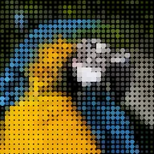

Pixeltegels

Bouwt de laag opnieuw op uit een raster van kleine tegels met pixelpatronen. Elke tegel bepaalt aan de hand van de helderheid eronder hoeveel van zijn patroon hij tekent, als een mix van ASCII-art en mozaïek. Chaos breekt het raster op met willekeurige tegels.
Instellingen
| Instelling | Type | Bereik | Standaard |
|---|---|---|---|
| Patroon | Keuze | Veel detail, Cijfers & letters, Horizontale lijnen, Stippen, Verticale lijnen, Grunge, Ringen, Effen, Diagonaal links, Diagonaal rechts | Stippen |
| Toon uit | Keuze | Luminantie, Gemiddelde, Rood, Groen, Blauw | Luminantie |
| Tegelgrootte | Getal | 2 tot 256 | 16 |
| Detail | Getal | 2 tot 16 | 8 |
| Schakeringen | Getal | 2 tot 16 | 8 |
| Helderheid | Getal | -100% tot 100% | 0% |
| Contrast | Getal | 0% tot 400% | 100% |
| Voorgrond | Kleur | – | #FFFFFF |
| Achtergrond | Kleur | – | #000000 |
| Originele kleur gebruiken | Aan of uit | – | Uit |
| Transparante achtergrond | Aan of uit | – | Uit |
| Patroonverschuiving | Punt (X, Y) | -5000 px tot 5000 px | 0 px, 0 px |
| Chaos | Aan of uit | – | Uit |
| Hoeveelheid chaos | Getal | 0% tot 100% | 25% |
| Willekeurige seed | Getal | 0 tot 9999 | 1 |
| Chaossnelheid | Getal | 0 tot 30 | 0 |
| Willekeurige patronen | Aan of uit | – | Aan |
| Pixels spiegelen | Aan of uit | – | Aan |
| Tegels husselen | Aan of uit | – | Uit |
| Mix | Getal | 0% tot 100% | 100% |